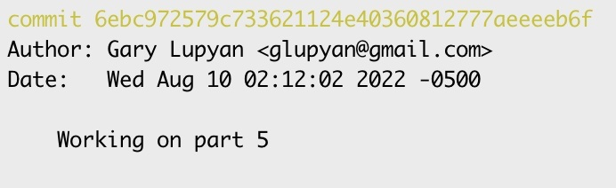

Submitting assignments
Contents
Submitting assignments#
We’ll be using Github classroom for submitting assignments. This will give you practice with version control and allow us to easily comment on your code.
Assignments are due on Tuesday by 9pm central.
Step 1: Accept an assignment#
Make sure git is installed and that you have an account on Github (see installation instructions)
Accept the assignment. For the purposes of this tutorial, please accept this test assignment
Next, you’ll want to clone the repository on your local machine using
git clone URL
where URL is the URL of your personal assignment repository; it should look something like https://github.com/psych750/exercise-0-glupyan
Tip
Use a directory like Documents/classes/psych750/exercises and clone all the exercises into it to keep things neat
Note
We recommend not using the “Open in VSCode” option and not attempting to do git commits within VSCode unless you know what you’re doing – this can change the directory structure and cause hard-to-debug issues with submitting your assignments.
Step 2: Do the assignment#
Note that your cloned repository (The test assignment called Exercise_0) contains a file called test_assignment.py. For real assignments, the exercise repository will contain starter code and any additional files you may need to complete the assignment.
This test assignment has 3 parts:
Create a new file called
my_addition.txtwhich should just have the text “A new file”Edit
my_addition.txtto have a second line of text reading “I added a second line”Edit
test_assignment.pyto printHello big world
When you’re done with each part, you’re going to commit the change, tag it, and push it to the remote repository allowing us to look at it and give you feedback as necessary.
Step 3: Submit each part of the assignment#
After you complete each part, commit the changes and tag it. Here’s the workflow.
git add .
git commit -m "Finished part 1"
git tag "Exercise_0_1"
git push origin main --tags
Let’s break this down:
git add tells git that you want to “stage” the files for committing. The dot is a wildcard meaning all the files in the directory and all the directories within it. (git add *) means stage all the files in the current directory. git add <filename> would stage just the specific file you specify.
The next line - git commit Commits the changes and the message tells others (or the future you) what happened during this commit.
Each commit is identified by a unique identifier composed of a bunch of letters and numbers. Not very meaningful. git tag allows you to tag the commit with an informative and easy to type name
Important
Be mindful of capitalization. Git commands (like most programming environments) are case-sensitive. exercise_1_1 and Exercise_1_1 are completely different strings. Also be mindful of things like smartquotes–those nice looking quotes that word-processors (and keyboards with some language-settings) might insert in place of plainquotes. "" (plainquotes) are different from “” (smart-quotes). In all cases, use plainquotes.
Ginally, git push pushes the commit (and the associated tags) to the remote repository. You don’t need to push after every commit. You can make make commits, tag them, keep working and then push the whole thing when you’re done. Obviously, if you would like us to look at your code in your repository, you’ll need to push first.
Important
The first time you push, you may be asked to valiate your github access token. If you have trouble with this, ask for help.
Some parts of actual assignments will require you to code quite a bit, so you’ll want to make multiple commits. You can push these intermediate commits to the classroom site if you like, but all that’s required is that your final solution for each part is committed and tagged.
Important
You must use following format for tags: Exercise_[exercise#]_[part#]. For example, your tag for part 3 of Exercise 2 should be Exercise_2_3. Please make sure this is correct!
Tip
After you’ve tracked the file you are changing with git add . You can combine add and commit into a single line like so: git commit -am "Finished part 2".
Note
By default, git tag will assign the tag to your most recent commit (i.e., the HEAD).
If you want to attach the tag to a previous version, you can do specify its unique code(hash; see Tips below). You can read more about tags here
Warning
Forgetting to use --tags`` after push` will cause the tags you added to only be visible to you locally; we won’t be able to see them on our end
Looking at solutions#
Following the submission deadline, I will push the Exercise solutions to a private repository https://github.com/psych750/solution
You must be subscribed to this repository.,
They will be tagged in the same way as your submitted assignments so you can browse the tags on the github site or checkout individual tagged commits using git checkout
Tips#
See the git log#
git log
You can print a more compact log using
git log --oneline
git log will list the commits made on the branch you’re currently on. If you want to also see the commits you made while on other branches, use
git log --all
Or combine it with –oneline for more compact printing.
If you want to additionally see the commits made on unnamed (typically temporary) branches, you can with this:
git log --reflog
Figure out what’s been changed and which files are being staged#
git status
Check out a particular commit#
You can check out using a tag name, e.g., Exercise_1_2
git checkout <tag name>
You can list the available tags (i.e., those you’ve used previously) with
git tag
If you want to go to a previous commit that did not have a tag associated with it, use the hash provided by git log use the hash value of the commit you want to revert to:
e.g. if the relevant part of the log looks like this: 
you can go to this commit by using
git checkout 6ebc972579c733621124e40360812777aeeeeb6f
Undo a push#
Sometimes you’ll push some changes to a remote repository and want to undo them. To do this, reset back to the version you want by using the appropriate hash.
The hash is a unique code generated for each version in your version history. To undo and return to a specifc version in github you will need to get the hash. You can find it in your git log (see the section above: “See git log”). The hash will be a long sequence of letters and numbers unique to your version. You can then reset to the version associated with your hash, e.g.
git reset --hard {your hash}
Note
The –hard flag ensures that the reverted commit is wiped clean from the git log. If you want to keep some of those changes either locally on your computer or in the git history you will want to “rewind” (see Rewind section below)
This resets your local branch. You can now update the remote branch to the current status (the current HEAD) by using
git push -f
Get the URL of remote branch#
git remote -v
Change where a repository pushes to#
In case you need to change the URL that you are pushing to
git remote set-url origin https://some_url/some_repo
origin is just a convention for naming the original URL that you first cloned from
List the available branches#
Lists both local and remote branches
git branch -a
Switch to a particular branch#
git switch <branchname>
Detached HEAD?#
Do you have a detached HEAD that you want to re-attach? See here
Merging#
Merging is an extremely helpful tool in version control systems. Merging is the process of integrating changes from one branch into another. For example, when working with teammate on the same code, you may each want to work on different branches. You’ll need to merge their work together to combine it. Similarly, you might have each edited the same section. Merging allows you to resolve conflicts between multiple versions of a code before submission.
Make sure the branch is up to date:#
You’ll want to make sure you have pulled the most recent version of the submission. You can do this with a checkout. (See above: Check out a particular commit):
git checkout <tag name>
Merge the main branch into your branch:#
This step is about merging your branch with the main project. If there are conflicts you will see them here:
git merge origin/main
If you see conflicts in the form of an error message, you will have to edit them manually.
Push the updated feature branch back to Github#
Once you’ve manually resolved any conflicts, and merge no longer states there ae conflicts. You can push the updated branch back to github
git push origin <tag name>
Note
When working on a larger or more complicated project it is often best to add a tag to the merge and indicate to your teammates that conflicts have been resolved.
Fast-forward#
Like merging, fast-forward can be extremely helpful while working in groups. A fast-forward is a type of merge that is available when there are no new branches and you simply want to catch up to the latest version by bringing your main branch up to date with your personal branch. It’s the simplest kind of merge because you’re just moving forward in the timeline and catching up to the most recent version.
First you will want to use fetch to make sure you are up to date with the Github repository:
git fetch origin
Next, you will want to switch to the main branch.
git checkout main
Then bring the main branch up to date with merge
git merge <tag name>
If your ‘feature-branch’ has only moved forward from where ‘main’ was when you started (meaning no one else has updated ‘main’ since you branched off), Git will perform a fast-forward. However, if main has been updated there will be conflicts as discussed above (see “Merging”).
It’s a way to move forward to catch up to the latest version of your project.
Rewind#
Rewinding in Git is often referred to as “reverting” or “resetting.” It’s used when you want to go back to an earlier version of a project locally. Note that this is different from undoing a push. Undoing a push is about changing the shared repository on github. Rewind is about changing the version of the code in your own workspace, whether or not you’ve shared it with others.
First, you will want to identify which version you want to go back to. Like with undoing a push (see above), you will need the hash code from the version you want to return to. You can see the hash code in the git log (see “See the Git log” above”). This will show you a list of recent commits, each with its own commit hash.
Once you’ve found the commit you want to go back to, you can use the “git reset” command to rewind to that point.
If you want to keep the changes you made after that commit as unsaved work in your files (so you can edit them), you can do a mixed reset:
git reset --mixed {your hash}
Note that this is done locally. Also note that unlike undoing a push, this does not permanently delete and rewrite the history of the project.
If you want to rewind the shared version while keeping a shared history of those changes, you will want to use a different command. Revert creates a new commit that undoes the changes made in the commit you are reverting. This maintains a history of both the original change and the fact that the change was later undone.
git revert {your hash}
Remember, “git reset” only affects your local repository, and “git revert” is for when you need to undo changes that your teammates may have already seen or pulled into their own local repositories.